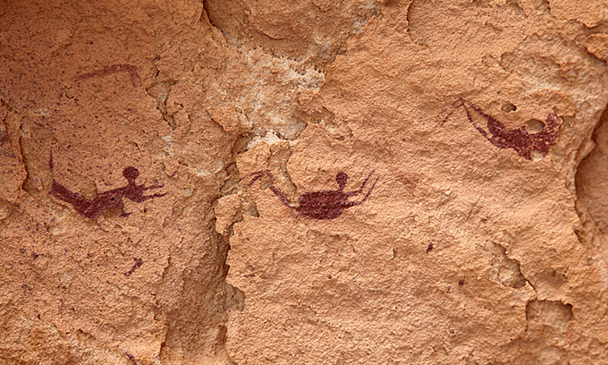
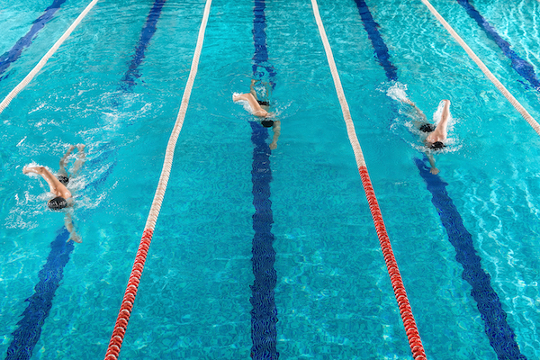
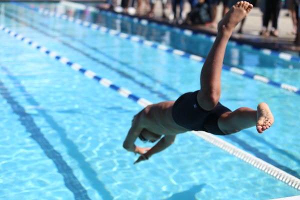

HISTORY
TYPE
TOOL
EFFECT
PLACE
수영의 기원
🐠
수영은 물과 인간이 모두 지구 상에 있을 때부터 일어난 고대의 활동이다.
이집트 남서부의 선사시대 그림은 수영하는 사람들의 모습을 보여준다.
그 이미지들은 개 노를 젓거나 평영을 하는 것처럼 보이지만,
이것들은 그 어떤 것보다도 의례적인 것이었는지도 모른다.

물론 고대에는 생존을 위해 수영이 행해졌다.
사람들이 반대편에서 안전하게 강을 건너야 했든,
익사하지 않기 위해 단순히 물을 밟는 방법을 알았든 간에,
수영은 확실히 고대로부터 먼 길을 왔다.
오늘날 알려진 바와 같이 경쟁적인 의미에서의 수영의 역사는 이렇다.
수영의 인식
🖍
영국은 수영에 가장 먼저 참가하는 나라로 레크리에이션과 경쟁 스포츠로 인정받고 있다.
1837년 런던의 인공 수영장에서 대회가 열렸다.
영국 국립 수영 협회는 그 대회를 조직하였고, 그 대회는 빠르게 인기를 끌었다.

수영 역사상 최초의 실내 수영장은 1862년 영국에서 건설되었다.
곧, 더 많은 수영장이 지어졌고 1880년에 또 다른 수영 단체가 설립되었다.
대회에 활용된 주요 수영 스타일은 평영과 최근 개발된 사이드 스트로크였다.
올림픽 출전
🏅
수영은 1896년 남자 스포츠로 올림픽에 참가했다.
그들은 자유형 100미터와 1500미터 부문에서 경쟁했다. 이것들은 공터에서 열렸다.
수영 역사 동안 평영, 배영, 버터플라이, 즉, 나비 영법 그리고 개인 메들리를 포함한 더 많은 올림픽 종목들이 곧 추가되었다.
영국 국립 수영 협회는 그 대회를 조직하였고, 그 대회는 빠르게 인기를 끌었다.

수영이 특징인 처음 몇 개의 올림픽 게임에는 여성이 포함되지 않았다.
1912년이 되어서야 여자 수영이 포함됐다.
현재 각 하계 올림픽에는 남녀 16개 종목이 열리며 총 32개 종목이 참가한다.
스페셜 올림픽은 남녀 수영 부문도 22개로 총 44개다.